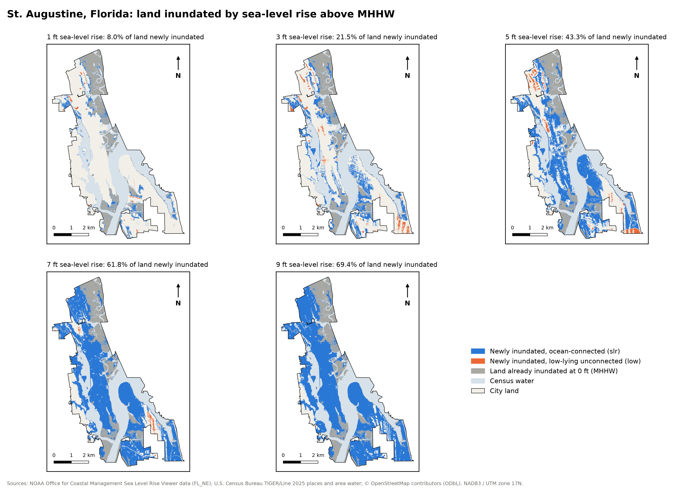
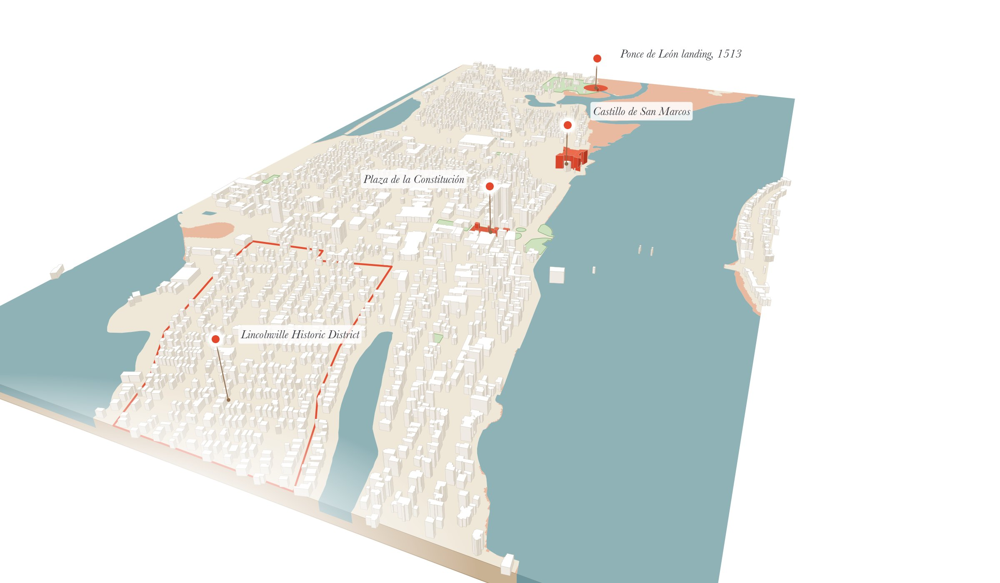
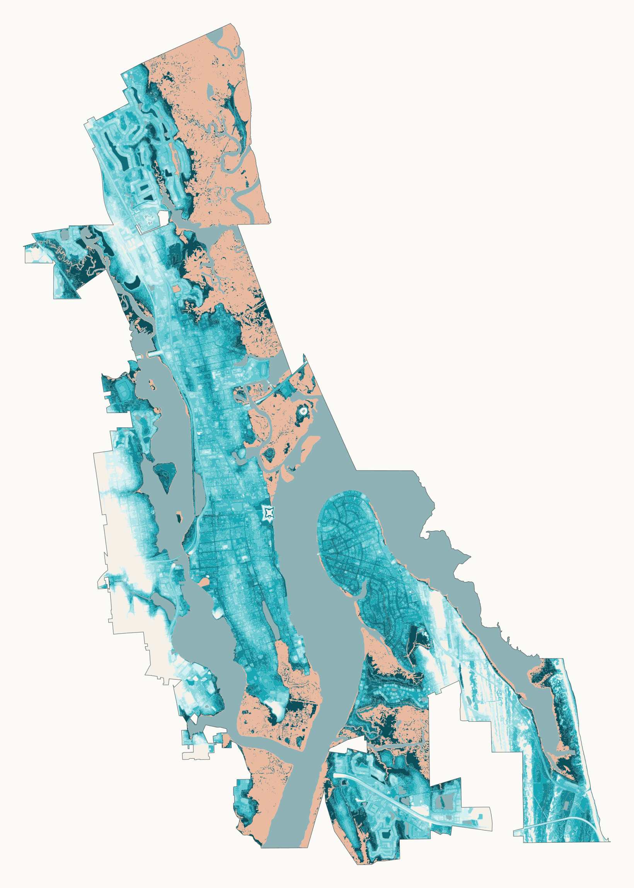
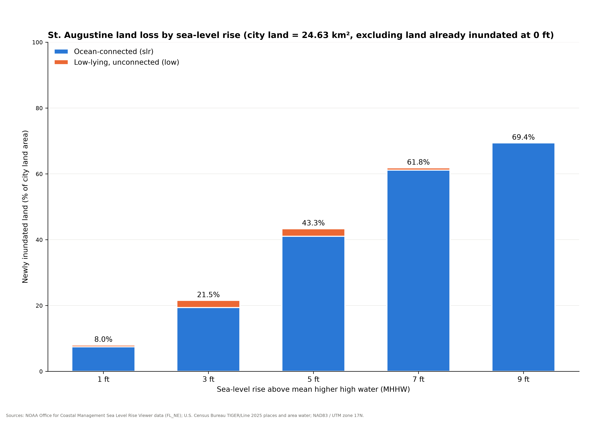
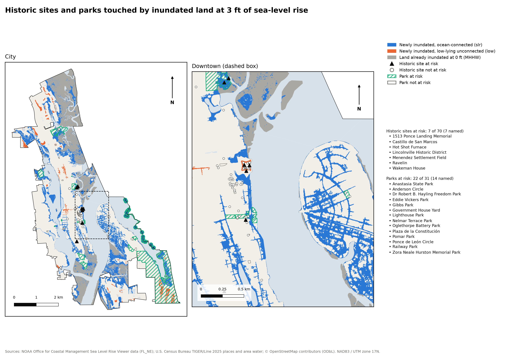

Figure 1 · A4 landscape · vector PDF 11.9 MB
Inundation at 1, 3, 5, 7 and 9 ft

Same extent and scale on every map. Grey is land already inundated at 0 ft. Blue and orange are new inundation at that level.
At just 2 ft of sea-level rise, low-lying ground at the Castillo de San Marcos is already under water. At 3 ft, a fifth of the city's land floods beyond today's high-tide line, and the sea reaches the Plaza de la Constitución.
Drag to compareThe old town today against the same streets after sea-level rise. Drag the handle (or focus it and use the arrow keys), pick a level, press play to watch the water rise a foot at a time, or tap a red ring for a landmark's story. 2.5D view up the bayfront from the south; heights and water exaggerated five times.

Press Raise, tap the picture, or use the arrow keys: six steps from today to +9 ft. Each card says how much of the city goes under and which landmarks the water reaches, from the same tables as the rest of the page.
Hollow pearl: low-lying ground there floods while still cut off from the sea. Solid pearl: the sea itself arrives. Tap a pearl to see that level.
An east–west section, as a landscape architect would draw it: real ground from USGS 3DEP lidar, today's high tide from the NOAA tide gauge in the Matanzas River, and the water at each level coloured the way NOAA's flood layers classify it.
Every patch of city land, coloured by the first level from 1 to 9 ft that floods it. Tap a street you know, or a red landmark ring. The map is 10 m per pixel, so treat a single building as approximate.

Share of the city's 24.63 km² of land that floods at each level, not counting the 5.68 km² (mostly tidal marsh) already below today's mean higher high water. Click a level to see it in the comparison.
Before you look: at +3 ft, how much of the city's land goes under?
slr)
Low-lying, not connected to the ocean (low)
ALAND figureNOAA's 2022 sea-level-rise scenarios for the one-degree cell over St. Augustine. Pick a scenario: each dot marks the year a level is reached (median), the band is the 17th–83rd percentile range. Click a level to see it in the comparison.
Type a year to see how old you would be as each foot arrives.
Tap a dot for the storm.
Tracks and winds from NOAA's HURDAT2 best-track record. Higher on the chart means closer to the city; larger and redder means stronger winds while within range. The flood maps above are still water at a fixed height: storm surge would come on top of them, and this project does not model it.

Same extent and scale on every map. Grey is land already inundated at 0 ft. Blue and orange are new inundation at that level.

The unconnected low share rises and then falls: as water connects a low-lying area to the ocean, NOAA reclassifies it as slr.

“At risk” means any part of the site or park touches inundated land. OSM tags many downtown buildings without historic=*, so these counts are a lower bound.
slr and low layers are clipped, dissolved and intersected with land at each level.slr never shrinks with level, and slr and low never overlap.low areas actually flood depends on drainage and groundwater.